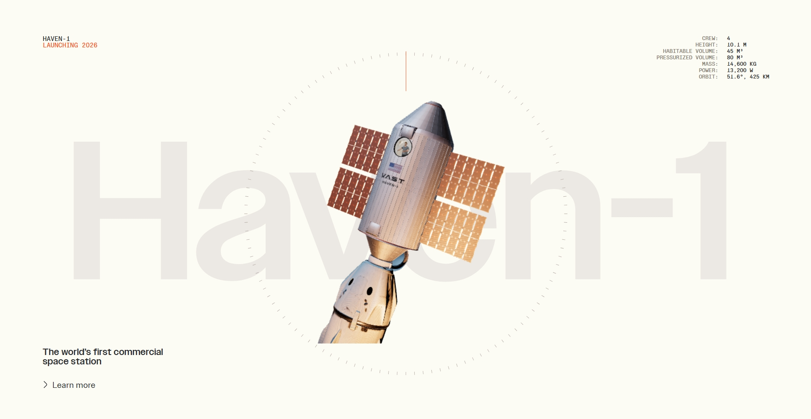
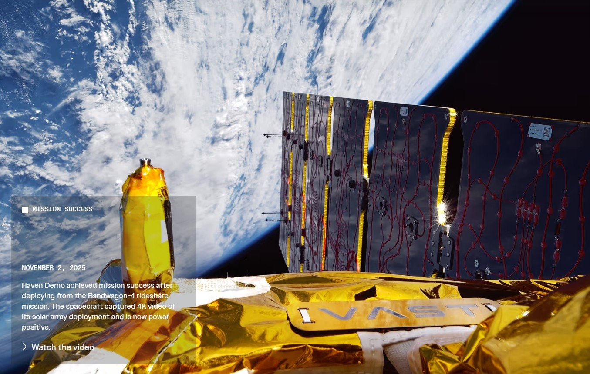
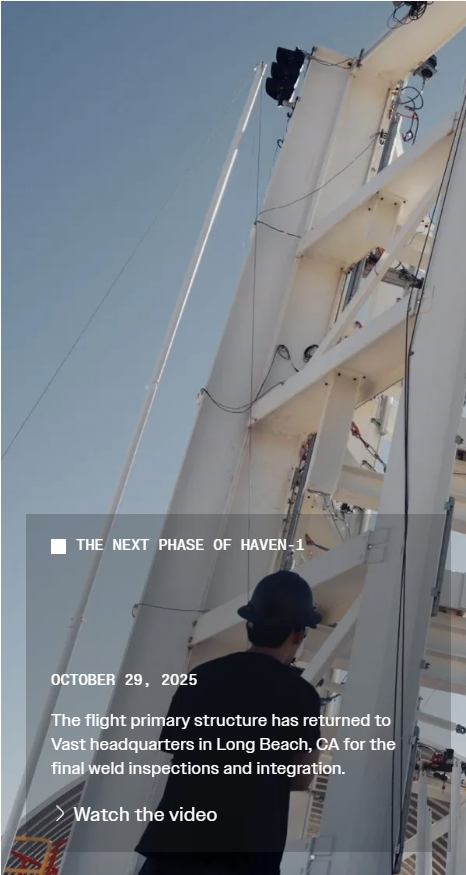
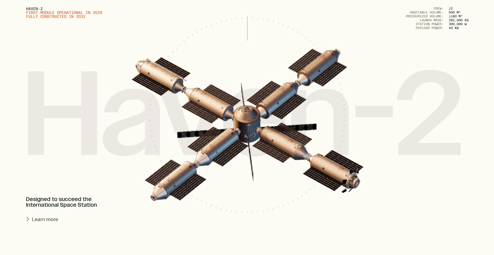
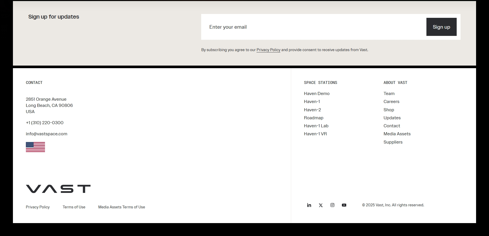

Building
next-Generation
space stations
> Watch full video
+
+
+
+
Vast is developing humanity’s most
capable space stations, pioneering the
next giant leap toward long-term living
and thriving in space.
View our roadmap
Haven Demo:
In-space testbed for
Haven-1 space station
technologies
In November 2025, Haven Demo achieved mission
success after deploying from SpaceX’s Bandwagon-4
flight. The spacecraft captured 4K video of its solar array
deployment and is now power-positive.
>Learn more
Launch video Courtesy of spaceX

Haven-1 hardware development progress


SEE THE MANUFACTURING AND TESTING
PROCESS OF HAVEN-1, THE WORLD'S
FIRST COMMERCIAL SPACE STATION.

Designed, manufactured,
and tested in the
United States.
Vast is bringing space station primary structure
manufacturing back to the United States after two
decades. Most subsystems for Haven-1 have been
manufactured by Vast and partners in the USA.
Types of missions
Our Haven-1 station caters to all types of mission
objectives. Learn more about the types of missions
we provide.
> Find out more


Government astronaut missions
Private astronaut missions
payload missions

Mission
Partnership
SpaceX will launch Haven-1 on a Falcon 9
rocket and transport the crew using its
Dragon spacecraft. Haven-1 will feature
Starlink - SpaceX's high-speed internet—
providing Gigabit speeds and low-latency
connectivity via laser terminals to the Starlink
satellite network. The use of Starlink on
Haven-1 will mark the first deployment of
Starlink internet on a commercial space
station.
> Visit SpaceX
In the press
The Californian start-up behind it
[Haven Demo], Vast, wants to build
the first commercial space station
and aims to launch it as soon as
next year. Success would signal a
new era in spaceflight, one where
nation states no longer collaborate
to maintain a human presence
above the planet.
What makes Vast’s strategy
particularly noteworthy for
industry observers is its focus on
progressive complexity.
A pathfinder mission for Vast’s
privately owned space station
launched into orbit Sunday and
promptly extended its solar panel,
kicking off a shakedown cruise to
prove the company’s designs can
meet the demands of spaceflight.
Updates
More updates

.jpg)

PRESS RELEASE NOVEMBER 25, 2025
PRESS RELEASE NOVEMBER 20, 2025
PRESS RELEASE NOVEMBER 19, 2025
Vast and the Maldives Space Research
Organisation Sign Memorandum of
Understanding to Engage Republic of
Maldives Space Industry
Vast and the Colombian Space Agency Sign
Memorandum of Understanding (MOU) to
Advance Space Cooperation in Latin
America
Uzbekistan’s Ministry of Digital
Technologies and Vast Establish Agreement
to Engage Uzbek Space Industry
